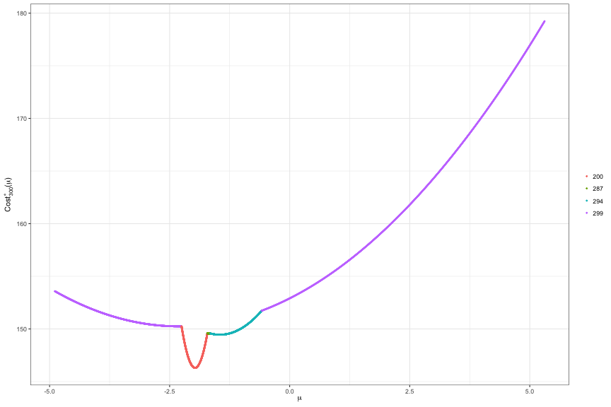
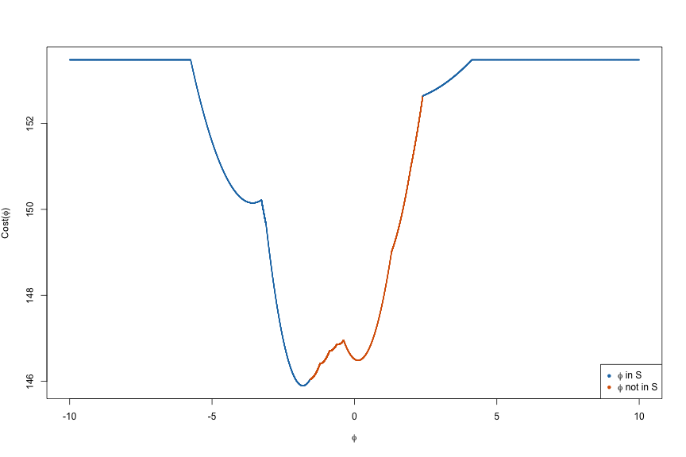

Advanced tutorial
In this tutorial, we demonstrate advanced use of the ChangepointInference package.
Installation instructions are provided here.
First load the package:
require(ChangepointInference)## Loading required package: ChangepointInferenceTo illustrate the software, we generate a synthetic dataset according to
and assume that $\mu_1,\ldots,\mu_T$ is piecewise constant, in the sense that $\mu_{\tau_j+1}=\mu_{\tau_j + 2 } = \ldots = \mu_{\tau_{j+1}}$, $\mu_{\tau_{j+1}} \neq \mu_{\tau_{j+1}+1}$, for $j=0,\ldots,K-1$, where $0 = \tau_{0} < \tau_{1} < \ldots < \tau_{K} < \tau_{K+1} = T$, and where $\tau_1,\ldots,\tau_K$ represent the true changepoints.
set.seed(1)
mu <- rep(c(1, 3, -2), each = 100)
dat <- mu + rnorm(length(mu))
plot(dat, cex = 1, ylab = "y", xlab = "t")
Changepoint estimation
To estimate changepoints via $\ell_0$ segmentation, we use functional recursions (Rigaill, 2015; Maidstone, Hocking, Rigaill, & Fearnhead, 2017). In this section, we briefly describe these recursions and illustrate how this information can be extracted from our software.
Let $\mathrm{Cost}(y_{1:s}; u)$ be the cost of segmenting $y_{1:s}$ with $\mu_{s} = u$. Then $\mathrm{Cost}(y_{1:s}; u)$ can be efficiently computed: At the first timepoint, we have $\mathrm{Cost}(y_{1}; u) = \frac12(y_{1} - u)^{2}$; for any $s > 1$ and for all $u$,
For each $u$, this recursion encapsulates two possibilities: (i) there is no changepoint at the $(s-1)$st timepoint, and the optimal cost is equal to the previous cost plus the cost of a new data point, $\mathrm{Cost}(y_{1:(s-1)};u) + \frac12(y_{s} - u)^{2}$; (ii) there is a changepoint at the $(s-1)$st timepoint, and the optimal cost is equal to the optimal cost of segmenting up to $s-1$ plus the penalty for adding a changepoint at $s-1$ plus the cost of a new data point, $\min_{u’}{\mathrm{Cost}(y_{1:(s-1)};u’)} + \lambda + \frac12(y_{s} - u)^{2}$.
Setting functional_pruning_out = TRUE allows us to examine $\mathrm{Cost}(y_{1:s}; u)$. The following plots $\mathrm{Cost}(y_{1:300}; u)$. Colors represent the most recent changepoint associated with optimal cost at each $u$.
lam <- 4
fit <- changepoint_estimates(dat, "L0", lam, functional_pruning_out = TRUE)
p <- plot(fit, s = 300)
To manually access the cost functions use fit$piecewise_square_losses. Since $\mathrm{Cost}(y_{1:s}; u)$ is piecewise quadratic, we represent each component through its coefficients (square, linear, constant) over domain (min_mean, max_mean). Furthermore, we store the most recent changepoint data_i for each region (min_mean, max_mean).
For example, the plot above is created by filtering the dataframe to $s = 300$. We see that this cost function is defined over five regions with most recent changepoints at 200, 287, 294, 299.
fit$piecewise_square_losses[fit$piecewise_square_losses$s == 300, ]## square linear constant min_mean max_mean prev_last_mean
## 1617 0.5 2.305815 152.9045 -4.8889207 -2.2512053 -1.966938
## 1618 50.0 197.032646 340.4123 -2.2512053 -1.7139801 2.962192
## 1619 6.5 21.534563 167.4032 -1.7139801 -1.6503894 -2.017219
## 1620 3.0 8.722768 155.7920 -1.6503894 -0.5818996 -2.003297
## 1621 0.5 2.305815 152.9045 -0.5818996 5.3079784 -1.966938
## data_i s
## 1617 299 300
## 1618 200 300
## 1619 287 300
## 1620 294 300
## 1621 299 300Changepoint inference
The conditioning set $\mathcal{S}$ can be extracted for fixed and adaptive $\nu$s by setting return_conditioning_sets = TRUE. See Section 3 of our paper (Jewell, Fearnhead, & Witten, 2019) for additional details.
For example,
h <- 10
K <- 2
fit_inference <- changepoint_inference(dat, 'BS-fixed', K, window_size = h, sig = 1, return_conditioning_sets = TRUE)The conditioning set for each estimated changepoint can be accessed through
fit_inference$conditioning_sets## [[1]]
## min_mean max_mean contained
## 1 -Inf -63.819416 1
## 2 -63.819416 -1.555879 1
## 3 -1.555879 33.068620 0
## 4 33.068620 Inf 1
##
## [[2]]
## min_mean max_mean contained
## 1 -Inf -8.835202 1
## 2 -8.835202 2.720512 0
## 3 2.720512 13.128808 1
## 4 13.128808 Inf 1Each row is a subset of $\mathbb{R}$ defined as (min_mean, max_mean). This region is in $\mathcal{S}$ if contained = 1.
There are simple plotting tools to visualize these sets:
plot(fit_inference, thj = fit_inference$change_pts[1])
In the case of inference with $\ell_0$ segmentation, it is also possible to view the cost of segmenting the data as a function of $\phi$, that is,
fit_inference <- changepoint_inference(dat, 'L0-fixed', lam, window_size = h, sig = 1, return_conditioning_sets = TRUE)
plot(fit_inference, thj = fit_inference$change_pts[1])
References
- Rigaill, G. (2015). A pruned dynamic programming algorithm to recover the best segmentations with 1 to K_max change-points. Journal De La Société Française De Statistique, 156(4), 180–205.
- Maidstone, R., Hocking, T., Rigaill, G., & Fearnhead, P. (2017). On optimal multiple changepoint algorithms for large data. Statistics and Computing, 27(2), 519–533.
- Jewell, S., Fearnhead, P., & Witten, D. (2019). Testing for a change in mean after changepoint detection.